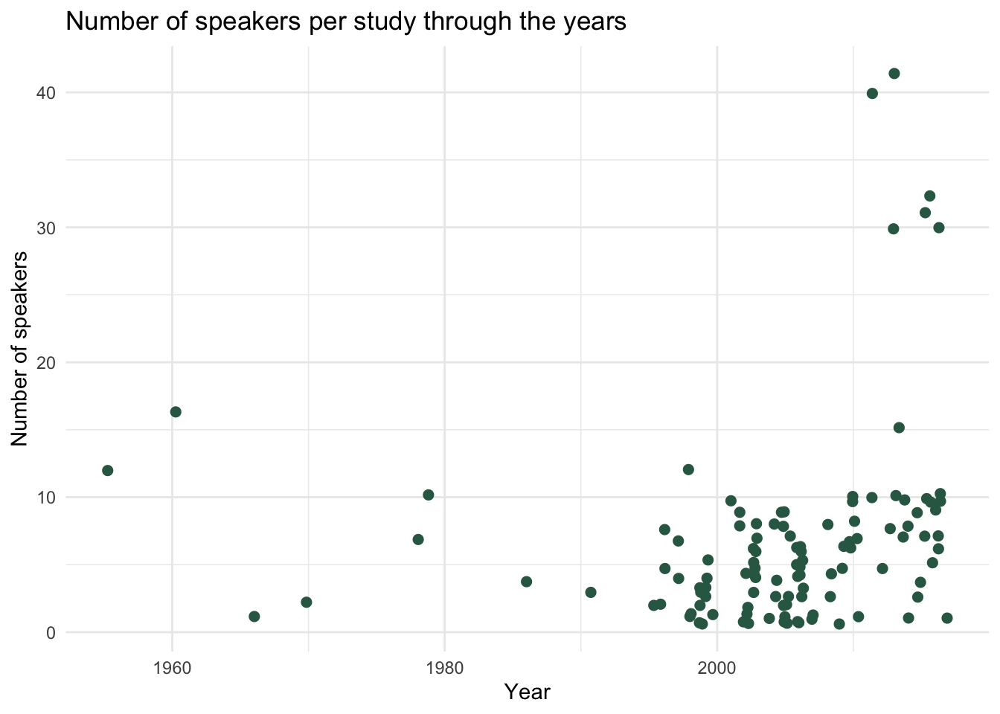
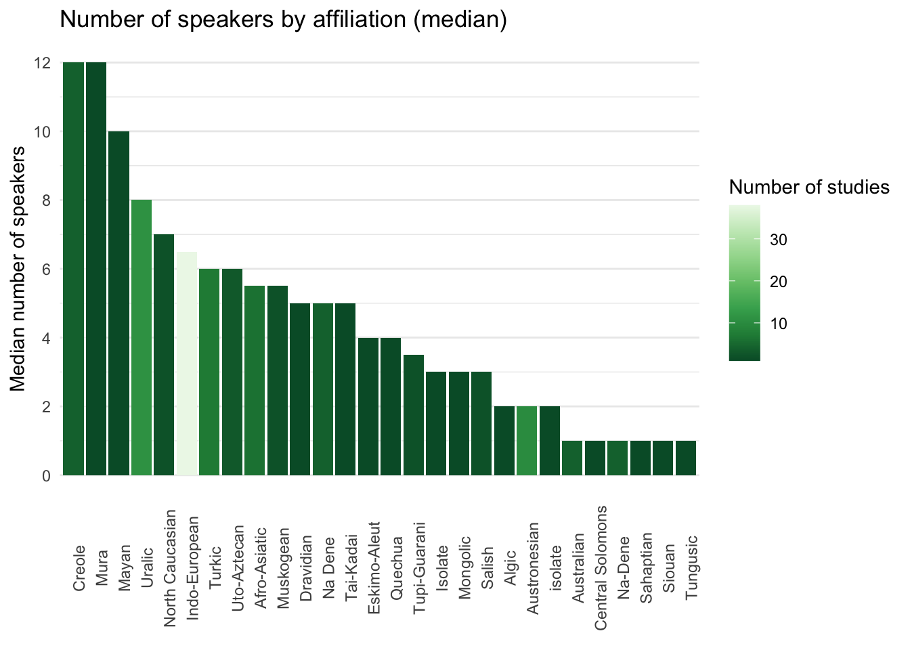
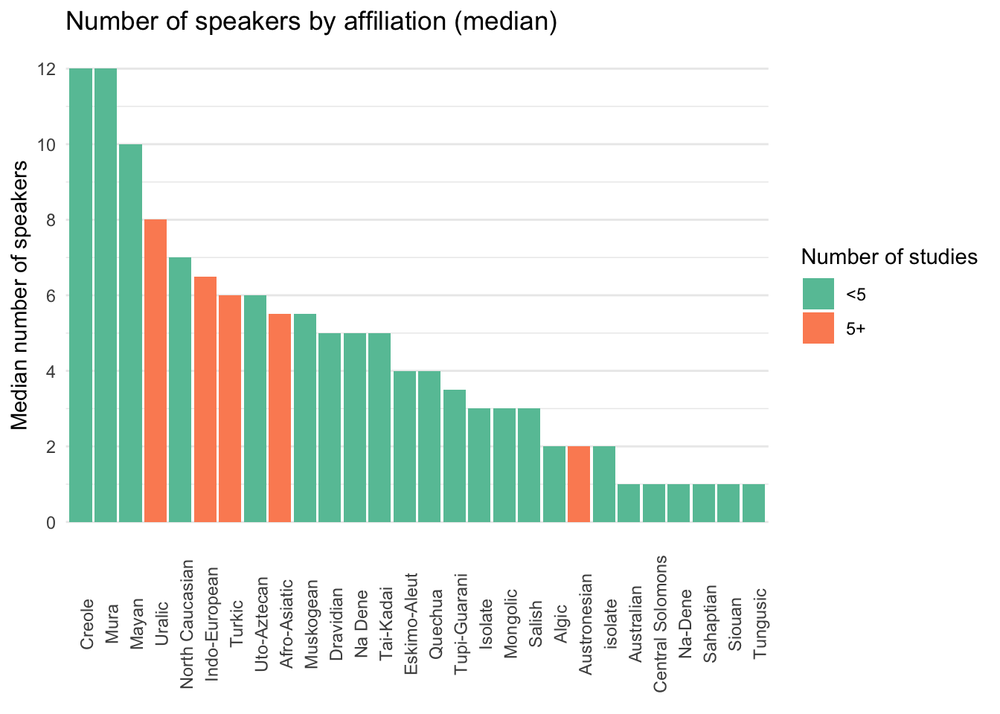
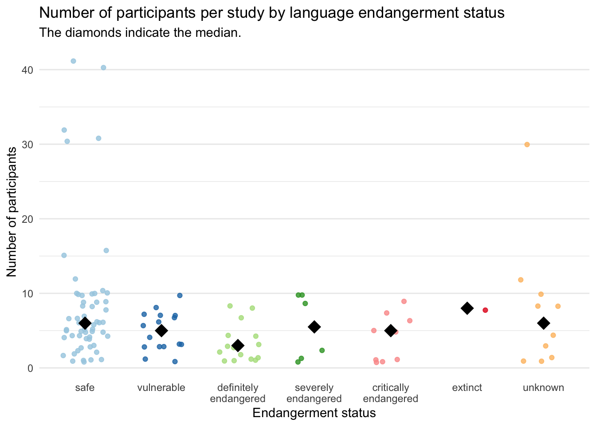

An estimate of number of speakers per study in phonetics
Linguistics
Methods
A few weeks ago, I’ve asked on Twitter what people thought was the average number of participants used in phonetic studies. Here’s the tweet.
Does anyone have an estimate of the average number of participants/tokens per context of recently published phonetic studies (let's say from the last 10 years)? #OpenScience #phonetics #replication
— Stefano Coretta (@StefanoCoretta) April 12, 2019
Thankfully, Timo Roettger has pointed me to a dataset he and Matthew Gordon created for a study on the acoustic correlates of word stress, and he suggested to look at how the median number of speakers changed (or not) through the years. The dataset reports, among other things, the number of participants in the surveyed studies. Christian DiCanio has also thoughtfully noted that language endangerment should be taken into consideration in any enquiry about number of speakers.
General trends
The dataset contains data from 113 studies, published between 1955 and 2017 (the bulk of studies is within the range 1990-2017 though). The median number of speakers per study is 5. The histogram below illustrates that most studies have around 10 speakers or less, and that there are a few outliers with 30-40 speakers.
Number of speakers through the years
We now turn to the number of speakers through the years. I can’t really say that there is a clear trend, if not for the fact that the studies with more than 30 speakers are (unsurprisingly) more recent.

Number of speakers by linguistic affiliation
The following bar chart shows the median number of speakers in studies by genetic affiliation. The colour of the bars indicates the number of studies. Indo-European languages stand out in terms of number of studies (> 30), although the number of speakers does not fare better than other less-reachable language families.

This plot is the same as the one above, but families have been categorised by number of studies in two categories: up to 5 studies vs. 5 or more. It is not surprising that Uralic, Indo-European, Turkic, Afro-Asiatic and Austronesian stand out.

Number of speakers by endangerment status
Information on the endangerment status of the languages in the dataset was obtained from GlottoLog. The following strip chart show the number of speakers for each of the studies (each point) categorised by the endangerment of the language. Of course there are way more studies on safe languages, and if we focus on the first three categories of endangerment (safe, vulnerable, definitely endangered) there is a tendency to have a decreasing number of speakers. Considering though that we are talking of very low numbers of speakers (5-10) I am not sure it is actually relevant that definitely endangered languages have a lower median than safe languages. Difficult to say anything about higher endangerment levels given the low number of studies.

While of course making generalisations based on this cursory analysis would not be wise, there seems to be a tendency for studies to have a very low number of speakers (median 5 speakers over study). The majority of studies have obtained data from 10 speakers or less, independent of publication year and endangerment status of the language enquired.